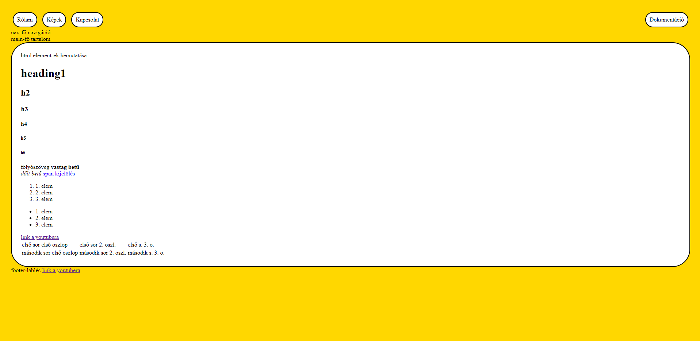

Leírás
A portfólió oldal készítése során nem volt túl sok előzetes elképzelésem, többnyire improvizáltam.
Az első oldallal kezdtem, majd össze-vissza haladtam, amelyiket épp tudtam csináltam, ha nem ment áttértem egy másikra, ha pedig eszembe jutott valami megcsináltam.
Az első oldallal kezdtem, majd össze-vissza haladtam, amelyiket épp tudtam csináltam, ha nem ment áttértem egy másikra, ha pedig eszembe jutott valami megcsináltam.
Rólam
Őszintén bevallom, hogy a programozás a félév elején nem tartozott a kedvenc időtöltéseim közé, de azóta jobban megszerettem és ha tehetném még több időt szentelnék erre a beadandóra, mert izgalmasnak találom ezt a feladatot, de idő hiány miatt a többi tantárgyból kifolyólag, és egyéb COVID-tünetek miatt csak ennyire tellett.:(
Ha nem is sikerül a kívánt szintre megcsinálnom a portfóliót, utólag remélem sikerrel járok.
Ha nem is sikerül a kívánt szintre megcsinálnom a portfóliót, utólag remélem sikerrel járok.